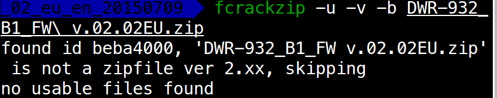
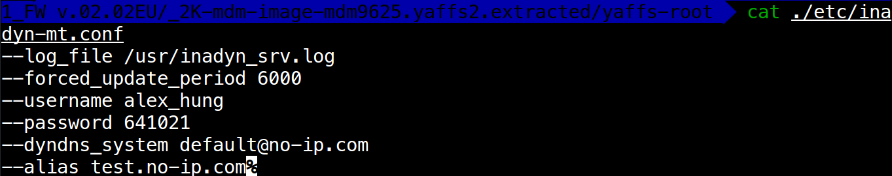

D-Link DWR-932B相关漏洞分析
前言
有段时间没调试漏洞了，正好《IOT PENETRATION TESTING COOKBOOK》的译本《物联网渗透测试》出来了，买了一本看看，同时通过调洞静下心来吧！
调试环境
- ubuntu16.04 x64虚拟机：安装了常用的pwn环境，binwalk等工具用于路由器固件调试分析
- IDA6.8：静态分析同时安装mipsrop插件寻找rop链，与gdb进行动态调试
- Ghidra：反汇编反编译mips架构程序，目前只用于静态分析
- qemu2.5：利用qemu的用户和系统模式运行固件
- gdbserver：已经编译好的gdbserver，也可以自己编译生成
- Firmadyne：全系统仿真工具，模拟运行路由器固件，本质还是基于qemu的系统模式
- firmwalker：一些搜索固件解压出来的文件系统中的敏感信息的自动化脚本
- 固件下载：https://tsd.dlink.com.tw/
漏洞介绍
根据研究员pierre kim的IT Security Research，固件DWR-932_fw_revB_2_02_eu_en_20150709.zip, model revision B存在很多漏洞，漏洞总结如下：
- 后门用户
- 后门
- 默认的WPS PIN
- 通过逆向算法，发现弱的WPS PIN生成算法
- 泄漏No-IP用户
- HTTP守护进程(qmiweb)的多种漏洞
- Remote FOTA (Firmware Over The Air)
- Bad security pratices
- Security removed in UPNP
有意思的是，当时pierre的个人观点是，这些漏洞产生的原因要么是能力不足，要么就是故意留下的这些漏洞（毕竟包括很多后门漏洞）。
测试流程
第一步：获取固件提取文件系统，但是固件是加密之后的zip文件，利用fcrackzip工具暴力破解口令。我的fcrackzip使用报错：

分析原因应该是zip文件不是完整的zip格式，所以无法解压。这里不再补齐它的完整格式，直接使用研究员用fcrackzip爆破的密码：beUT9z。
第二步：获取了固件镜像，解压之后有3个yaffs文件系统，直接用binwalk解压其中的2K-mdm-image-mdm9625.yaffs文件系统，这样就得到了完整的文件系统。
第三步：遍历文件系统中不同的目录，并从安全视角查找其中可能存在漏洞的文件，需要检查所有配置文件，可以利用find文件来查找所有.conf后缀名的文件。

第四步：查看配置文件，例如./etc/inadyn-mt.conf，结果直接发现了敏感文件。

这些信息本不应该被他人看见的，因为其中存储了no-IP配置信息，no-IP这是一种动态域名服务，配置文件包含了访问no-ip.com的用户名和密码。现在肯定登录不了。。。
上面是手工的方法，自动化的方法就是利用firmwalker自动化脚本，搜索敏感信息。
接着的分析等待之后有空再继续吧。。。
其实整个现在分析下来没什么意思，而且看IT Security Research发现里面没意思的洞太多了，调试分析起来没意思，不如直接审计反汇编代码挖洞去。